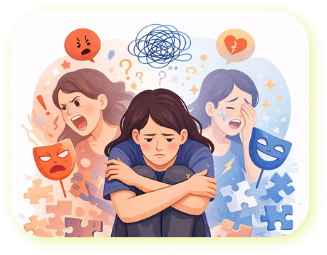

Kenali kondisi mentalmu melalui skrining berbasis AI yang cepat, mudah, dan informatif.
Dapatkan hasil analisis serta rekomendasi yang membantu menentukan langkah selanjutnya.
Hasil skrining bersifat identifikasi awal, bukan pengganti diagnosis tenaga profesional.

— Tentang Heal.In
Heal.In adalah sistem pakar berbasis web yang dikembangkan oleh kelompok Heal.In IK24-A sebagai proyek akhir mata kuliah Kecerdasan Buatan. Sistem ini membantu mahasiswa mengenali kondisi kesehatan mentalnya sejak dini melalui teknologi AI yang transparan dan mudah dipahami.
Inferensi bertahap dari gejala menuju kesimpulan.
Aturan IF-THEN dari pakar psikologi.
Alur penalaran yang mudah dipahami pengguna.
Saran tindak lanjut sesuai tingkat kondisi.
— Deteksi Kondisi
Muncul akibat tumpukan tugas dan tenggat waktu, biasanya mereda setelah istirahat cukup.
Lihat Detail— Fitur Utama
Pemeriksaan awal kondisi kesehatan mental secara mandiri kapan saja.
Mesin inferensi Forward Chaining yang memproses gejala secara sistematis.
Output identifikasi kondisi disertai penjelasan alur penalaran lengkap.
Saran tindak lanjut mulai dari mandiri hingga konsultasi profesional.